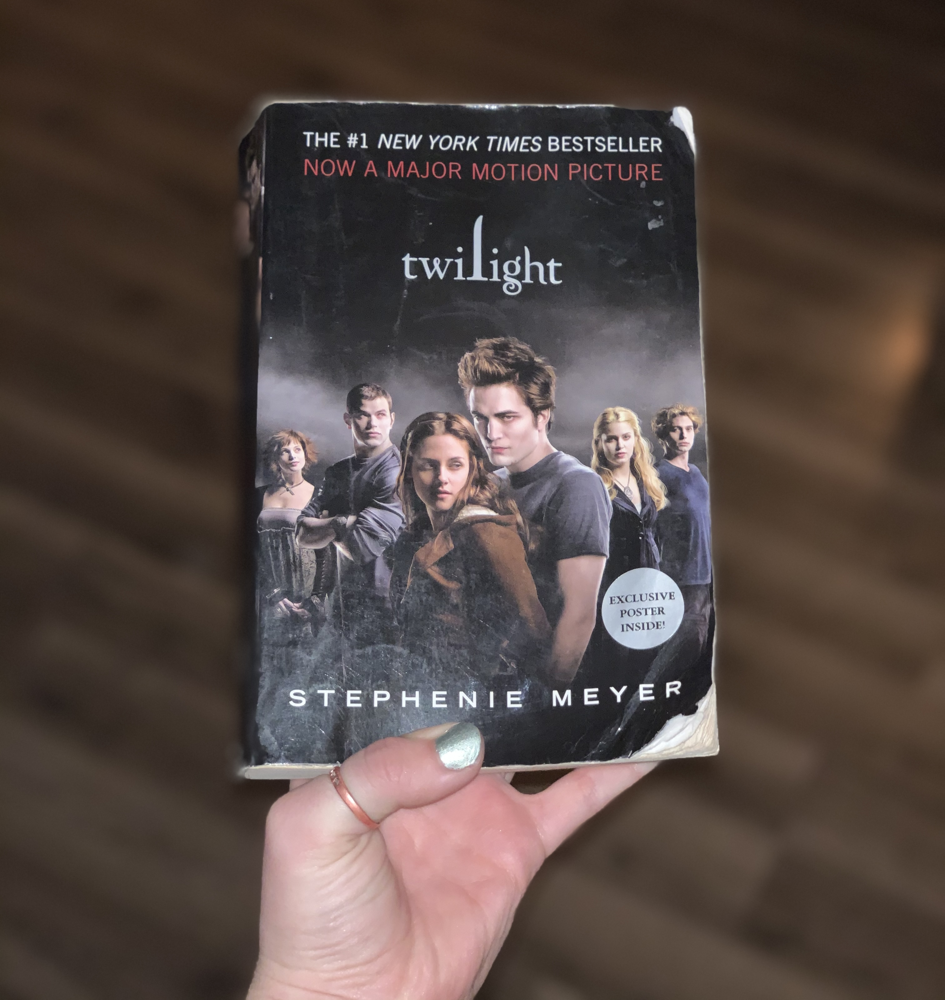

Since I was in 4th grade, I've been immersed in the world of Twilight. I started watching the iconic, blue-tinted film before I started reading the five novels (and one novella), and I can vividly remember awaiting each movie's release for films 2-5. Twilight serves as the perfect opportunity to escape from the problems of everyday life and take a trip to Washington state and its supernormal inhabitants. It has just enough cringeworthy one-liners to make you hate it but not too much. The baseball scene? Groundbreaking. The soundtracks? Phenomenal. The scenery? Beautiful. There's so much to appreciate about Twilight, but it's greatest appeal is that it doesn't pretend to be a perfect movie. When I think of good cinema, Twilight will never come to mind, yet if I think of my favorite movies of all time, it will always take first place.
While some of us (me) are completely satisfied re-watching Twilight every night, here are some TV shows I would recommend if you're looking for something similar: